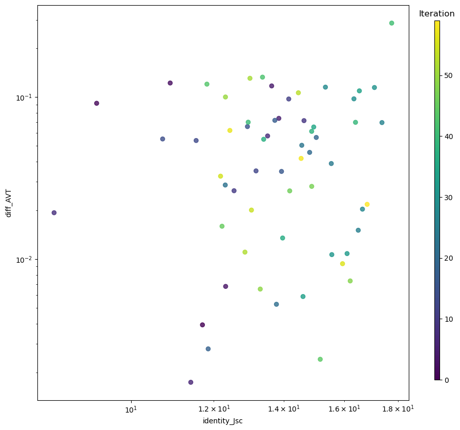
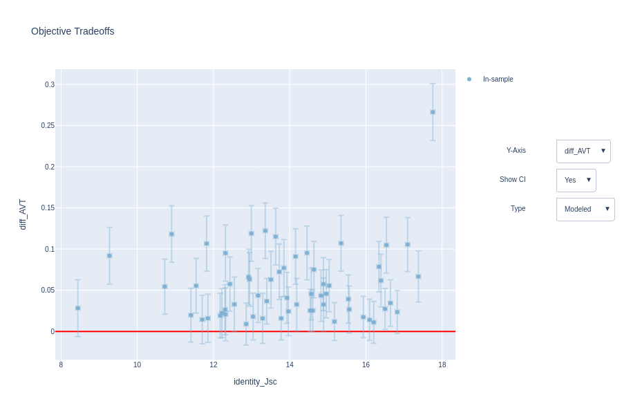
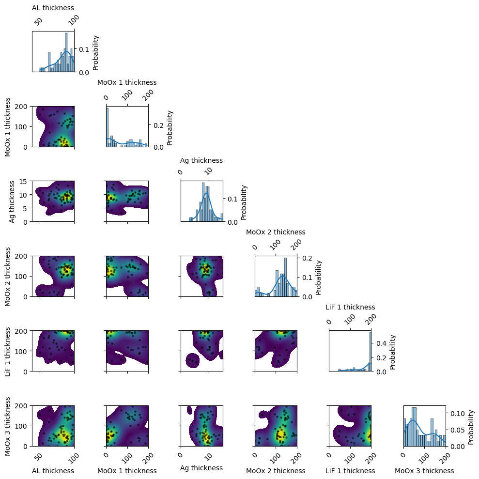
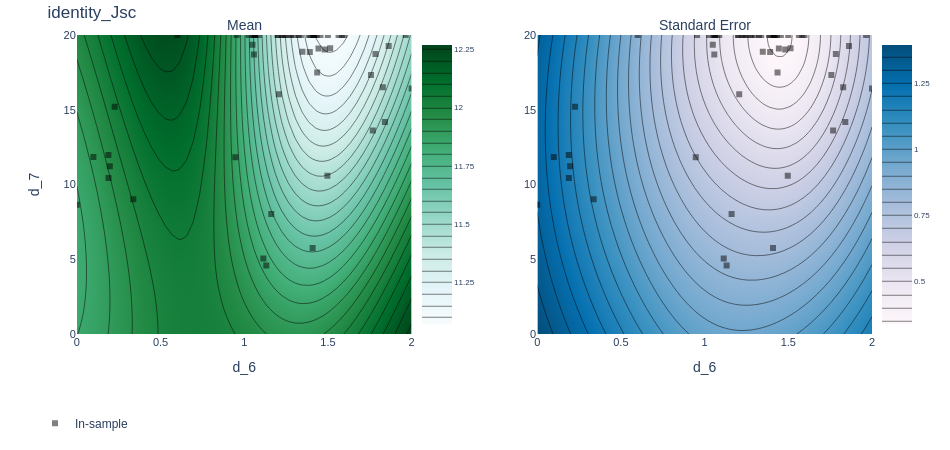
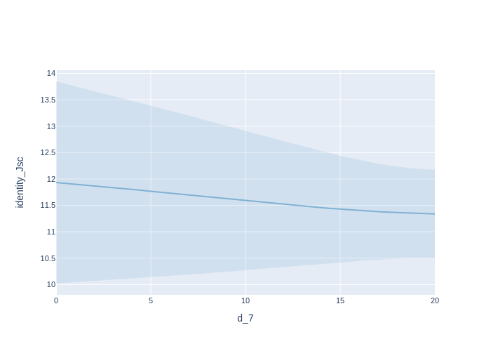
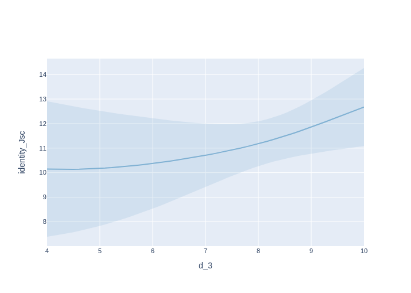
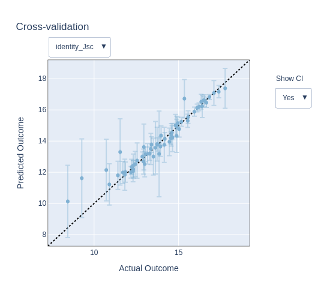
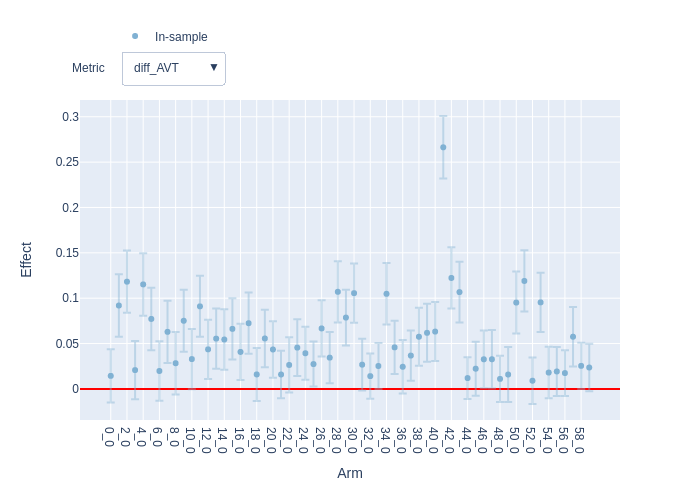
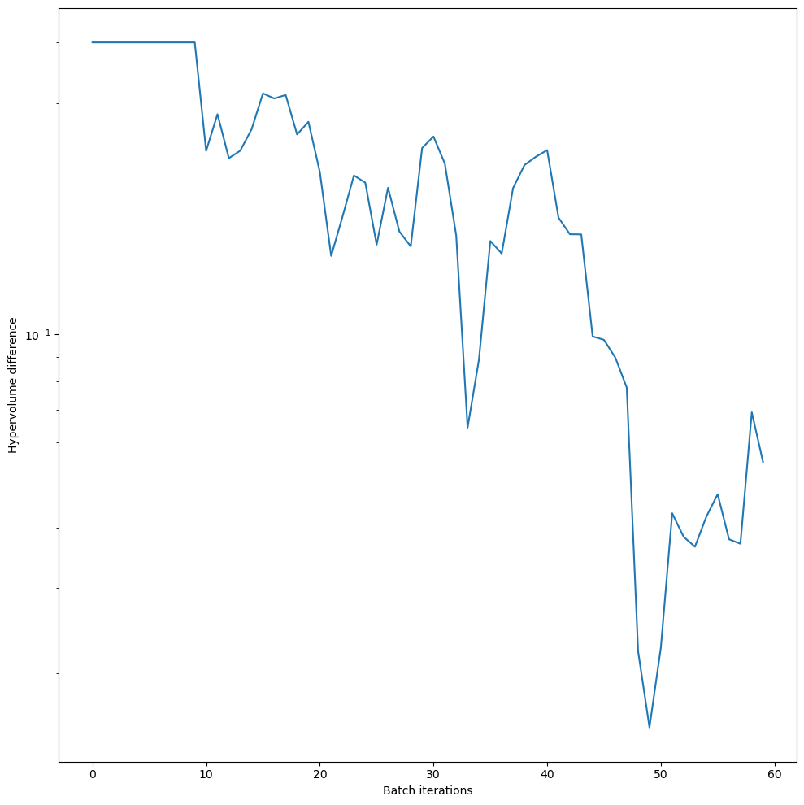
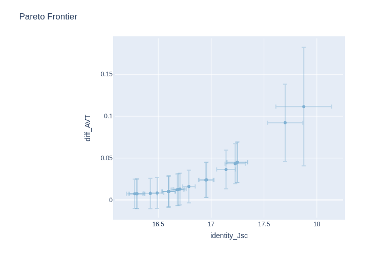

BOAR with Transfer Matrix Method
Version 1.0.0 (c) Vincent M. Le Corre, Larry Lueer, i-MEET 2021-2023
This notebook is made to use BOAR in combination with transfer matrix modeling (TMM) to optimize the thickness of the layers in a multilayer stack to optimize the average visible transmittance (AVT) and maximize the current density (Jsc) of a solar cell.
To perform the transfer matrix modeling we use a modified version of the open-source program devoloped by McGehee’s group (Stanford University) and adapted to python by Kamil Mielczarek (University of Texas).
For more information about the transfer matrix modeling, please refer to the original paper.
[1]:
# Activate matplotlib widgets
# %matplotlib inline
# comment the next line if you are on the jupyterhub server
# %matplotlib widget
# %matplotlib notebook
import plotly.io as pio # comment out to only render png
pio.renderers.default = 'png'
# Import libraries
import sys,os
import warnings
warnings.filterwarnings('ignore') # comment this out to see warnings
# Import boar
sys.path.append('../') # comment out if the Notebook is in the Notebooks folder
from boar import *
from boar.core.optimization_botorch import *
# import additional libraries from Ax
from ax.utils.notebook.plotting import render, init_notebook_plotting # for plotting in notebook
from ax.plot.slice import plot_slice
from ax.plot.scatter import interact_fitted,plot_objective_vs_constraints,tile_fitted
from ax.modelbridge.cross_validation import cross_validate
from ax.plot.contour import interact_contour
from ax.plot.diagnostic import interact_cross_validation
from ax.plot.pareto_utils import compute_posterior_pareto_frontier
from ax.plot.pareto_frontier import plot_pareto_frontier
# Import homemade package by VLC
# import boar.SIMsalabim_utils.plot_settings_screen # to set default plot settings
[2]:
# Define the path to the data
curr_dir = os.getcwd() # current directory
res_dir = os.path.join(os.path.abspath('../'),'temp') # path to the results directory
mat_dir = os.path.join(os.path.abspath('../'),'Example_Data/matdata') # path to the mat files directory, comment if not in Notebooks folder
[3]:
# Initialize the agent and default device stack
layers = ['SiOx' , 'ITO' , 'ZnO' , 'PCE10_FOIC_1to1' , 'MoOx' , 'Ag', 'MoOx', 'LiF','MoOx', 'LiF','Air'] # list of layers (need to be the same than the name nk_*.csv file in the matdata folder)
thicknesses = [0 , 100 , 30 , 100 , 9 , 8, 100, 100, 100, 100, 100] # list of thicknesses in nm
tm = Transfer_Matrix_agent(layers=layers, thicknesses=thicknesses,mat_dir=mat_dir) # initialize the agent
Define the free parameters to be optimized
[4]:
params = []
d_3 = Fitparam(name = 'd_3', val = 80, lims = [40, 100], relRange = 1, range_type = 'lin',
lim_type = 'absolute',optim_type='lin', display_name = 'AL thickness', unit = 'nm')
params.append(d_3)
d_4 = Fitparam(name = 'd_4', val = 100, lims = [0, 200], relRange = 1, range_type = 'lin',
lim_type = 'absolute',optim_type='lin', display_name = 'MoOx 1 thickness', unit = 'nm')
params.append(d_4)
d_5 = Fitparam(name = 'd_5', val = 10, lims = [0, 15], relRange = 1, range_type = 'lin',
lim_type = 'absolute',optim_type='lin', display_name = 'Ag thickness', unit = 'nm')
params.append(d_5)
d_6 = Fitparam(name = 'd_6', val = 100, lims = [0, 200], relRange = 1, range_type = 'lin',
lim_type = 'absolute',optim_type='lin', display_name = 'MoOx 2 thickness', unit = 'nm')
params.append(d_6)
d_7 = Fitparam(name = 'd_7', val = 10, lims = [0, 200], relRange = 1, range_type = 'lin',
lim_type = 'absolute',optim_type='lin', display_name = 'LiF 1 thickness', unit = 'nm')
params.append(d_7)
d_8 = Fitparam(name = 'd_8', val = 100, lims = [0, 200], relRange = 1, range_type = 'lin',
lim_type = 'absolute',optim_type='lin', display_name = 'MoOx 3 thickness', unit = 'nm')
params.append(d_8)
d_9 = Fitparam(name = 'd_9', val = 10, lims = [0, 200], relRange = 0, range_type = 'lin',
lim_type = 'absolute',optim_type='lin', display_name = 'LiF 2 thickness', unit = 'nm')
params.append(d_9)
[5]:
# run the model on the default stack configuration
X = [0] # we need to provide a list of inputs even if it is not used later
print('Jsc = ', tm.TM(X,params,output=['Jsc'],is_MOO=False))
print('LUE = ', tm.TM(X,params,output=['LUE'],is_MOO=False))
print('AVT = ', tm.TM(X,params,output=['AVT'],is_MOO=False))
Jsc = 10.53248308747983
LUE = 3.5542800166757664
AVT = 0.337458886679895
Start the optimization
[6]:
# Define the targets and the model for the TM problem
X_dimensions = ['_']
y_dimension = 'Jsc'
target = {'model':partial(tm.TM,output=['Jsc'],is_MOO=True),'target_name':'Jsc','minimize':False,
'data':{'X':X,'y':[0],'X_dimensions':X_dimensions,'X_units':['s',''],'y_dimension':y_dimension,'y_unit':''}
,'target_weight':1, 'weight':1}
y_dimension = 'AVT'
target2 = {'model':partial(tm.TM,output=['AVT'],is_MOO=True),'target_name':'AVT','minimize':True,'obj_type':'diff',
'data':{'X':X,'y':[0.4],'X_dimensions':X_dimensions,'X_units':['s',''],'y_dimension':y_dimension,'y_unit':''}
,'target_weight':1, 'weight':1}
targets = [target,target2]
obj_type='identity'
loss='linear'
threshold=[8,0.05]
mo = MooBOtorch(params=params, targets= targets) # initialize the optimization object
kwargs_posterior = {'Nres':10,'Ninteg':1e3,'logscale':True,'vmin':1e-100,'zoom':0,'min_prob':1e-40,'clear_axis':False,'True_values':None,'show_points':True,'savefig':False,'figname':'param_posterior','full_grid':True,'randomize':True}
ax_client = mo.BoTorchOpti(n_jobs=[1,1], n_step_points = [10, 50], models=['Sobol','MOO'],obj_type=obj_type,loss=loss,threshold=threshold,use_CUDA=True,is_MOO=True,verbose=True,show_posterior=False,kwargs_posterior=kwargs_posterior,use_custom_func=False)
[INFO 09-20 10:46:41] ax.service.ax_client: Starting optimization with verbose logging. To disable logging, set the `verbose_logging` argument to `False`. Note that float values in the logs are rounded to 6 decimal points.
[INFO 09-20 10:46:41] ax.service.utils.instantiation: Created search space: SearchSpace(parameters=[RangeParameter(name='d_3', parameter_type=FLOAT, range=[4.0, 10.0]), RangeParameter(name='d_4', parameter_type=FLOAT, range=[0.0, 2.0]), RangeParameter(name='d_5', parameter_type=FLOAT, range=[0.0, 1.5]), RangeParameter(name='d_6', parameter_type=FLOAT, range=[0.0, 2.0]), RangeParameter(name='d_7', parameter_type=FLOAT, range=[0.0, 20.0]), RangeParameter(name='d_8', parameter_type=FLOAT, range=[0.0, 2.0])], parameter_constraints=[]).
[INFO 09-20 10:46:41] ax.service.ax_client: Generated new trial 0 with parameters {'d_3': 9.020724, 'd_4': 0.936252, 'd_5': 0.966917, 'd_6': 1.48143, 'd_7': 19.038279, 'd_8': 1.630564}.
[INFO 09-20 10:46:44] ax.service.ax_client: Completed trial 0 with data: {'identity_Jsc': (11.703561, None), 'diff_AVT': (0.00393, None)}.
[INFO 09-20 10:46:44] ax.service.ax_client: Generated new trial 1 with parameters {'d_3': 5.138952, 'd_4': 1.578441, 'd_5': 1.144287, 'd_6': 0.337209, 'd_7': 9.009017, 'd_8': 1.546516}.
[INFO 09-20 10:46:46] ax.service.ax_client: Completed trial 1 with data: {'identity_Jsc': (9.27102, None), 'diff_AVT': (0.091688, None)}.
[INFO 09-20 10:46:46] ax.service.ax_client: Generated new trial 2 with parameters {'d_3': 8.223837, 'd_4': 1.039153, 'd_5': 0.761982, 'd_6': 0.947079, 'd_7': 11.827406, 'd_8': 1.550443}.
[INFO 09-20 10:46:49] ax.service.ax_client: Completed trial 2 with data: {'identity_Jsc': (10.900742, None), 'diff_AVT': (0.122311, None)}.
[INFO 09-20 10:46:49] ax.service.ax_client: Generated new trial 3 with parameters {'d_3': 6.499142, 'd_4': 1.510833, 'd_5': 1.023326, 'd_6': 0.197069, 'd_7': 11.22625, 'd_8': 0.394366}.
[INFO 09-20 10:46:52] ax.service.ax_client: Completed trial 3 with data: {'identity_Jsc': (12.31666, None), 'diff_AVT': (0.006789, None)}.
[INFO 09-20 10:46:52] ax.service.ax_client: Generated new trial 4 with parameters {'d_3': 8.117737, 'd_4': 0.255769, 'd_5': 0.423529, 'd_6': 1.114231, 'd_7': 5.046815, 'd_8': 0.73487}.
[INFO 09-20 10:46:55] ax.service.ax_client: Completed trial 4 with data: {'identity_Jsc': (13.630647, None), 'diff_AVT': (0.117345, None)}.
[INFO 09-20 10:46:55] ax.service.ax_client: Generated new trial 5 with parameters {'d_3': 9.831194, 'd_4': 1.936722, 'd_5': 0.556734, 'd_6': 1.131629, 'd_7': 4.585898, 'd_8': 0.50322}.
[INFO 09-20 10:46:58] ax.service.ax_client: Completed trial 5 with data: {'identity_Jsc': (13.847323, None), 'diff_AVT': (0.074005, None)}.
[INFO 09-20 10:46:58] ax.service.ax_client: Generated new trial 6 with parameters {'d_3': 5.630388, 'd_4': 0.083902, 'd_5': 0.694812, 'd_6': 1.827896, 'd_7': 16.507244, 'd_8': 0.642629}.
[INFO 09-20 10:47:00] ax.service.ax_client: Completed trial 6 with data: {'identity_Jsc': (11.406661, None), 'diff_AVT': (0.001738, None)}.
[INFO 09-20 10:47:00] ax.service.ax_client: Generated new trial 7 with parameters {'d_3': 8.714574, 'd_4': 1.250202, 'd_5': 1.016877, 'd_6': 1.496748, 'd_7': 10.585078, 'd_8': 1.937218}.
[INFO 09-20 10:47:03] ax.service.ax_client: Completed trial 7 with data: {'identity_Jsc': (13.509219, None), 'diff_AVT': (0.057628, None)}.
[INFO 09-20 10:47:03] ax.service.ax_client: Generated new trial 8 with parameters {'d_3': 6.472755, 'd_4': 0.71319, 'd_5': 0.318117, 'd_6': 1.408587, 'd_7': 5.747892, 'd_8': 1.755175}.
[INFO 09-20 10:47:06] ax.service.ax_client: Completed trial 8 with data: {'identity_Jsc': (8.441458, None), 'diff_AVT': (0.019346, None)}.
[INFO 09-20 10:47:06] ax.service.ax_client: Generated new trial 9 with parameters {'d_3': 7.437895, 'd_4': 0.264758, 'd_5': 1.24595, 'd_6': 1.76761, 'd_7': 13.614399, 'd_8': 0.485486}.
[INFO 09-20 10:47:09] ax.service.ax_client: Completed trial 9 with data: {'identity_Jsc': (14.636389, None), 'diff_AVT': (0.071646, None)}.
[INFO 09-20 10:47:12] ax.service.ax_client: Generated new trial 10 with parameters {'d_3': 7.622315, 'd_4': 1.734148, 'd_5': 1.032279, 'd_6': 0.098903, 'd_7': 11.843584, 'd_8': 0.0}.
[INFO 09-20 10:47:14] ax.service.ax_client: Completed trial 10 with data: {'identity_Jsc': (12.546832, None), 'diff_AVT': (0.02645, None)}.
[INFO 09-20 10:47:16] ax.service.ax_client: Generated new trial 11 with parameters {'d_3': 9.372198, 'd_4': 1.216091, 'd_5': 1.145736, 'd_6': 1.783941, 'd_7': 18.731133, 'd_8': 2.0}.
[INFO 09-20 10:47:18] ax.service.ax_client: Completed trial 11 with data: {'identity_Jsc': (14.152921, None), 'diff_AVT': (0.097452, None)}.
[INFO 09-20 10:47:21] ax.service.ax_client: Generated new trial 12 with parameters {'d_3': 7.253646, 'd_4': 0.226984, 'd_5': 0.871101, 'd_6': 1.862741, 'd_7': 19.260949, 'd_8': 0.524589}.
[INFO 09-20 10:47:23] ax.service.ax_client: Completed trial 12 with data: {'identity_Jsc': (13.168928, None), 'diff_AVT': (0.03507, None)}.
[INFO 09-20 10:47:26] ax.service.ax_client: Generated new trial 13 with parameters {'d_3': 7.826475, 'd_4': 1.15692, 'd_5': 0.955749, 'd_6': 0.189319, 'd_7': 10.442449, 'd_8': 0.199809}.
[INFO 09-20 10:47:28] ax.service.ax_client: Completed trial 13 with data: {'identity_Jsc': (11.541834, None), 'diff_AVT': (0.054004, None)}.
[INFO 09-20 10:47:32] ax.service.ax_client: Generated new trial 14 with parameters {'d_3': 5.541491, 'd_4': 1.853138, 'd_5': 1.049177, 'd_6': 0.1885, 'd_7': 11.97966, 'd_8': 0.133711}.
[INFO 09-20 10:47:34] ax.service.ax_client: Completed trial 14 with data: {'identity_Jsc': (10.720879, None), 'diff_AVT': (0.055213, None)}.
[INFO 09-20 10:47:37] ax.service.ax_client: Generated new trial 15 with parameters {'d_3': 7.022134, 'd_4': 0.093332, 'd_5': 0.564841, 'd_6': 1.840454, 'd_7': 14.179393, 'd_8': 0.595838}.
[INFO 09-20 10:47:39] ax.service.ax_client: Completed trial 15 with data: {'identity_Jsc': (12.922361, None), 'diff_AVT': (0.065848, None)}.
[INFO 09-20 10:47:41] ax.service.ax_client: Generated new trial 16 with parameters {'d_3': 7.766751, 'd_4': 0.345559, 'd_5': 1.173217, 'd_6': 1.419859, 'd_7': 20.0, 'd_8': 0.562726}.
[INFO 09-20 10:47:44] ax.service.ax_client: Completed trial 16 with data: {'identity_Jsc': (13.92903, None), 'diff_AVT': (0.034803, None)}.
[INFO 09-20 10:47:46] ax.service.ax_client: Generated new trial 17 with parameters {'d_3': 7.76575, 'd_4': 0.349562, 'd_5': 1.366015, 'd_6': 1.964556, 'd_7': 20.0, 'd_8': 0.534994}.
[INFO 09-20 10:47:49] ax.service.ax_client: Completed trial 17 with data: {'identity_Jsc': (13.726136, None), 'diff_AVT': (0.071939, None)}.
[INFO 09-20 10:47:51] ax.service.ax_client: Generated new trial 18 with parameters {'d_3': 8.113653, 'd_4': 0.477611, 'd_5': 0.786217, 'd_6': 1.409517, 'd_7': 20.0, 'd_8': 0.670585}.
[INFO 09-20 10:47:53] ax.service.ax_client: Completed trial 18 with data: {'identity_Jsc': (11.851903, None), 'diff_AVT': (0.002794, None)}.
[INFO 09-20 10:47:56] ax.service.ax_client: Generated new trial 19 with parameters {'d_3': 7.453591, 'd_4': 0.045713, 'd_5': 0.858374, 'd_6': 1.347662, 'd_7': 18.874335, 'd_8': 0.458993}.
[INFO 09-20 10:47:59] ax.service.ax_client: Completed trial 19 with data: {'identity_Jsc': (15.037391, None), 'diff_AVT': (0.056406, None)}.
[INFO 09-20 10:48:01] ax.service.ax_client: Generated new trial 20 with parameters {'d_3': 8.123057, 'd_4': 0.025675, 'd_5': 0.90527, 'd_6': 1.432285, 'd_7': 20.0, 'd_8': 0.972213}.
[INFO 09-20 10:48:04] ax.service.ax_client: Completed trial 20 with data: {'identity_Jsc': (14.819331, None), 'diff_AVT': (0.045623, None)}.
[INFO 09-20 10:48:07] ax.service.ax_client: Generated new trial 21 with parameters {'d_3': 9.013017, 'd_4': 1.330034, 'd_5': 0.944295, 'd_6': 1.417508, 'd_7': 20.0, 'd_8': 1.271917}.
[INFO 09-20 10:48:10] ax.service.ax_client: Completed trial 21 with data: {'identity_Jsc': (13.774134, None), 'diff_AVT': (0.005266, None)}.
[INFO 09-20 10:48:14] ax.service.ax_client: Generated new trial 22 with parameters {'d_3': 8.45579, 'd_4': 1.154687, 'd_5': 0.824063, 'd_6': 1.455477, 'd_7': 20.0, 'd_8': 1.001206}.
[INFO 09-20 10:48:17] ax.service.ax_client: Completed trial 22 with data: {'identity_Jsc': (12.306301, None), 'diff_AVT': (0.028691, None)}.
[INFO 09-20 10:48:21] ax.service.ax_client: Generated new trial 23 with parameters {'d_3': 9.416607, 'd_4': 1.372028, 'd_5': 1.078937, 'd_6': 1.384887, 'd_7': 20.0, 'd_8': 1.704759}.
[INFO 09-20 10:48:23] ax.service.ax_client: Completed trial 23 with data: {'identity_Jsc': (14.564912, None), 'diff_AVT': (0.050464, None)}.
[INFO 09-20 10:48:27] ax.service.ax_client: Generated new trial 24 with parameters {'d_3': 8.866981, 'd_4': 0.114082, 'd_5': 0.977706, 'd_6': 1.499573, 'd_7': 20.0, 'd_8': 0.434987}.
[INFO 09-20 10:48:30] ax.service.ax_client: Completed trial 24 with data: {'identity_Jsc': (15.54305, None), 'diff_AVT': (0.038934, None)}.
[INFO 09-20 10:48:33] ax.service.ax_client: Generated new trial 25 with parameters {'d_3': 9.007368, 'd_4': 0.079504, 'd_5': 1.089731, 'd_6': 1.225407, 'd_7': 20.0, 'd_8': 0.44505}.
[INFO 09-20 10:48:36] ax.service.ax_client: Completed trial 25 with data: {'identity_Jsc': (16.493566, None), 'diff_AVT': (0.015086, None)}.
[INFO 09-20 10:48:40] ax.service.ax_client: Generated new trial 26 with parameters {'d_3': 9.113565, 'd_4': 0.020694, 'd_5': 1.316462, 'd_6': 1.065655, 'd_7': 20.0, 'd_8': 0.366654}.
[INFO 09-20 10:48:43] ax.service.ax_client: Completed trial 26 with data: {'identity_Jsc': (17.378046, None), 'diff_AVT': (0.069695, None)}.
[INFO 09-20 10:48:46] ax.service.ax_client: Generated new trial 27 with parameters {'d_3': 9.598199, 'd_4': 0.0, 'd_5': 0.833517, 'd_6': 1.06259, 'd_7': 20.0, 'd_8': 0.626796}.
[INFO 09-20 10:48:48] ax.service.ax_client: Completed trial 27 with data: {'identity_Jsc': (16.647131, None), 'diff_AVT': (0.020361, None)}.
[INFO 09-20 10:48:51] ax.service.ax_client: Generated new trial 28 with parameters {'d_3': 9.598842, 'd_4': 0.0, 'd_5': 0.885803, 'd_6': 0.600781, 'd_7': 20.0, 'd_8': 0.348964}.
[INFO 09-20 10:48:54] ax.service.ax_client: Completed trial 28 with data: {'identity_Jsc': (15.343613, None), 'diff_AVT': (0.115344, None)}.
[INFO 09-20 10:48:58] ax.service.ax_client: Generated new trial 29 with parameters {'d_3': 9.729392, 'd_4': 0.0, 'd_5': 0.905096, 'd_6': 1.269931, 'd_7': 20.0, 'd_8': 0.800446}.
[INFO 09-20 10:49:00] ax.service.ax_client: Completed trial 29 with data: {'identity_Jsc': (16.337635, None), 'diff_AVT': (0.097667, None)}.
[INFO 09-20 10:49:03] ax.service.ax_client: Generated new trial 30 with parameters {'d_3': 8.632502, 'd_4': 0.0, 'd_5': 1.5, 'd_6': 1.394814, 'd_7': 20.0, 'd_8': 0.558807}.
[INFO 09-20 10:49:06] ax.service.ax_client: Completed trial 30 with data: {'identity_Jsc': (17.092501, None), 'diff_AVT': (0.114725, None)}.
[INFO 09-20 10:49:10] ax.service.ax_client: Generated new trial 31 with parameters {'d_3': 9.000942, 'd_4': 0.0, 'd_5': 0.912233, 'd_6': 1.417174, 'd_7': 20.0, 'd_8': 0.0}.
[INFO 09-20 10:49:13] ax.service.ax_client: Completed trial 31 with data: {'identity_Jsc': (15.560846, None), 'diff_AVT': (0.010667, None)}.
[INFO 09-20 10:49:16] ax.service.ax_client: Generated new trial 32 with parameters {'d_3': 8.779596, 'd_4': 0.0, 'd_5': 0.945437, 'd_6': 1.199063, 'd_7': 20.0, 'd_8': 0.190513}.
[INFO 09-20 10:49:19] ax.service.ax_client: Completed trial 32 with data: {'identity_Jsc': (16.09269, None), 'diff_AVT': (0.010825, None)}.
[INFO 09-20 10:49:23] ax.service.ax_client: Generated new trial 33 with parameters {'d_3': 8.87227, 'd_4': 0.232226, 'd_5': 0.848719, 'd_6': 1.245105, 'd_7': 20.0, 'd_8': 0.034039}.
[INFO 09-20 10:49:26] ax.service.ax_client: Completed trial 33 with data: {'identity_Jsc': (14.604427, None), 'diff_AVT': (0.00588, None)}.
[INFO 09-20 10:49:30] ax.service.ax_client: Generated new trial 34 with parameters {'d_3': 8.98357, 'd_4': 0.0, 'd_5': 0.966861, 'd_6': 1.206713, 'd_7': 16.043616, 'd_8': 0.262203}.
[INFO 09-20 10:49:33] ax.service.ax_client: Completed trial 34 with data: {'identity_Jsc': (16.534258, None), 'diff_AVT': (0.109406, None)}.
[INFO 09-20 10:49:36] ax.service.ax_client: Generated new trial 35 with parameters {'d_3': 8.631247, 'd_4': 0.054236, 'd_5': 0.681752, 'd_6': 1.32478, 'd_7': 20.0, 'd_8': 0.212757}.
[INFO 09-20 10:49:39] ax.service.ax_client: Completed trial 35 with data: {'identity_Jsc': (14.953521, None), 'diff_AVT': (0.065441, None)}.
[INFO 09-20 10:49:44] ax.service.ax_client: Generated new trial 36 with parameters {'d_3': 9.43282, 'd_4': 1.34628, 'd_5': 0.717898, 'd_6': 1.391693, 'd_7': 18.869814, 'd_8': 1.533561}.
[INFO 09-20 10:49:46] ax.service.ax_client: Completed trial 36 with data: {'identity_Jsc': (13.962892, None), 'diff_AVT': (0.013509, None)}.
[INFO 09-20 10:49:50] ax.service.ax_client: Generated new trial 37 with parameters {'d_3': 8.638854, 'd_4': 0.392977, 'd_5': 0.983086, 'd_6': 1.301467, 'd_7': 20.0, 'd_8': 0.168395}.
[INFO 09-20 10:49:53] ax.service.ax_client: Completed trial 37 with data: {'identity_Jsc': (13.393027, None), 'diff_AVT': (0.054965, None)}.
[INFO 09-20 10:49:57] ax.service.ax_client: Generated new trial 38 with parameters {'d_3': 9.780286, 'd_4': 1.505437, 'd_5': 0.843477, 'd_6': 1.338268, 'd_7': 20.0, 'd_8': 1.047009}.
[INFO 09-20 10:49:59] ax.service.ax_client: Completed trial 38 with data: {'identity_Jsc': (14.885701, None), 'diff_AVT': (0.061533, None)}.
[INFO 09-20 10:50:05] ax.service.ax_client: Generated new trial 39 with parameters {'d_3': 10.0, 'd_4': 0.0, 'd_5': 0.976832, 'd_6': 1.28043, 'd_7': 20.0, 'd_8': 0.023903}.
[INFO 09-20 10:50:07] ax.service.ax_client: Completed trial 39 with data: {'identity_Jsc': (16.394255, None), 'diff_AVT': (0.069947, None)}.
[INFO 09-20 10:50:11] ax.service.ax_client: Generated new trial 40 with parameters {'d_3': 8.620459, 'd_4': 1.623045, 'd_5': 0.697273, 'd_6': 1.583184, 'd_7': 20.0, 'd_8': 1.396965}.
[INFO 09-20 10:50:14] ax.service.ax_client: Completed trial 40 with data: {'identity_Jsc': (12.943691, None), 'diff_AVT': (0.07008, None)}.
[INFO 09-20 10:50:18] ax.service.ax_client: Generated new trial 41 with parameters {'d_3': 9.56416, 'd_4': 0.0, 'd_5': 1.5, 'd_6': 1.161202, 'd_7': 8.028368, 'd_8': 0.447077}.
[INFO 09-20 10:50:20] ax.service.ax_client: Completed trial 41 with data: {'identity_Jsc': (17.754328, None), 'diff_AVT': (0.286672, None)}.
[INFO 09-20 10:50:25] ax.service.ax_client: Generated new trial 42 with parameters {'d_3': 6.360676, 'd_4': 0.073401, 'd_5': 0.953864, 'd_6': 1.596738, 'd_7': 20.0, 'd_8': 0.0}.
[INFO 09-20 10:50:27] ax.service.ax_client: Completed trial 42 with data: {'identity_Jsc': (13.358382, None), 'diff_AVT': (0.132922, None)}.
[INFO 09-20 10:50:30] ax.service.ax_client: Generated new trial 43 with parameters {'d_3': 6.431529, 'd_4': 0.195479, 'd_5': 0.848687, 'd_6': 1.757115, 'd_7': 17.330573, 'd_8': 1.173606}.
[INFO 09-20 10:50:33] ax.service.ax_client: Completed trial 43 with data: {'identity_Jsc': (11.819211, None), 'diff_AVT': (0.120365, None)}.
[INFO 09-20 10:50:37] ax.service.ax_client: Generated new trial 44 with parameters {'d_3': 8.513296, 'd_4': 0.218824, 'd_5': 0.881081, 'd_6': 1.087453, 'd_7': 20.0, 'd_8': 0.70327}.
[INFO 09-20 10:50:40] ax.service.ax_client: Completed trial 44 with data: {'identity_Jsc': (15.16915, None), 'diff_AVT': (0.00241, None)}.
[INFO 09-20 10:50:45] ax.service.ax_client: Generated new trial 45 with parameters {'d_3': 8.993889, 'd_4': 1.050447, 'd_5': 0.845582, 'd_6': 1.235753, 'd_7': 20.0, 'd_8': 1.390144}.
[INFO 09-20 10:50:47] ax.service.ax_client: Completed trial 45 with data: {'identity_Jsc': (12.219058, None), 'diff_AVT': (0.01597, None)}.
[INFO 09-20 10:50:52] ax.service.ax_client: Generated new trial 46 with parameters {'d_3': 9.516499, 'd_4': 1.25207, 'd_5': 1.023102, 'd_6': 1.435749, 'd_7': 17.498929, 'd_8': 1.339746}.
[INFO 09-20 10:50:54] ax.service.ax_client: Completed trial 46 with data: {'identity_Jsc': (14.183171, None), 'diff_AVT': (0.026396, None)}.
[INFO 09-20 10:50:58] ax.service.ax_client: Generated new trial 47 with parameters {'d_3': 8.232578, 'd_4': 0.090046, 'd_5': 0.594727, 'd_6': 0.955, 'd_7': 20.0, 'd_8': 0.853071}.
[INFO 09-20 10:51:01] ax.service.ax_client: Completed trial 47 with data: {'identity_Jsc': (14.887262, None), 'diff_AVT': (0.02814, None)}.
[INFO 09-20 10:51:05] ax.service.ax_client: Generated new trial 48 with parameters {'d_3': 8.441218, 'd_4': 0.0, 'd_5': 0.918284, 'd_6': 1.060268, 'd_7': 20.0, 'd_8': 0.576814}.
[INFO 09-20 10:51:08] ax.service.ax_client: Completed trial 48 with data: {'identity_Jsc': (16.203839, None), 'diff_AVT': (0.007339, None)}.
[INFO 09-20 10:51:13] ax.service.ax_client: Generated new trial 49 with parameters {'d_3': 9.67944, 'd_4': 1.092521, 'd_5': 0.802803, 'd_6': 1.563446, 'd_7': 20.0, 'd_8': 1.466271}.
[INFO 09-20 10:51:16] ax.service.ax_client: Completed trial 49 with data: {'identity_Jsc': (13.291958, None), 'diff_AVT': (0.006537, None)}.
[INFO 09-20 10:51:22] ax.service.ax_client: Generated new trial 50 with parameters {'d_3': 7.115541, 'd_4': 1.577344, 'd_5': 1.002237, 'd_6': 0.225984, 'd_7': 15.205392, 'd_8': 0.38468}.
[INFO 09-20 10:51:25] ax.service.ax_client: Completed trial 50 with data: {'identity_Jsc': (12.31185, None), 'diff_AVT': (0.100261, None)}.
[INFO 09-20 10:51:30] ax.service.ax_client: Generated new trial 51 with parameters {'d_3': 6.714054, 'd_4': 1.563515, 'd_5': 1.103725, 'd_6': 0.0, 'd_7': 8.64392, 'd_8': 0.256334}.
[INFO 09-20 10:51:33] ax.service.ax_client: Completed trial 51 with data: {'identity_Jsc': (12.994268, None), 'diff_AVT': (0.130798, None)}.
[INFO 09-20 10:51:41] ax.service.ax_client: Generated new trial 52 with parameters {'d_3': 9.274065, 'd_4': 1.092379, 'd_5': 0.950646, 'd_6': 1.513335, 'd_7': 19.11871, 'd_8': 1.320826}.
[INFO 09-20 10:51:44] ax.service.ax_client: Completed trial 52 with data: {'identity_Jsc': (12.851945, None), 'diff_AVT': (0.011053, None)}.
[INFO 09-20 10:51:50] ax.service.ax_client: Generated new trial 53 with parameters {'d_3': 9.821614, 'd_4': 1.223517, 'd_5': 0.969776, 'd_6': 1.057858, 'd_7': 18.701358, 'd_8': 1.451701}.
[INFO 09-20 10:51:52] ax.service.ax_client: Completed trial 53 with data: {'identity_Jsc': (14.456, None), 'diff_AVT': (0.106461, None)}.
[INFO 09-20 10:52:00] ax.service.ax_client: Generated new trial 54 with parameters {'d_3': 8.034151, 'd_4': 0.357626, 'd_5': 0.832056, 'd_6': 1.201635, 'd_7': 20.0, 'd_8': 0.923679}.
[INFO 09-20 10:52:03] ax.service.ax_client: Completed trial 54 with data: {'identity_Jsc': (13.036769, None), 'diff_AVT': (0.020091, None)}.
[INFO 09-20 10:52:10] ax.service.ax_client: Generated new trial 55 with parameters {'d_3': 9.119671, 'd_4': 1.013924, 'd_5': 0.724583, 'd_6': 1.443613, 'd_7': 19.102578, 'd_8': 1.393656}.
[INFO 09-20 10:52:13] ax.service.ax_client: Completed trial 55 with data: {'identity_Jsc': (12.179281, None), 'diff_AVT': (0.03253, None)}.
[INFO 09-20 10:52:21] ax.service.ax_client: Generated new trial 56 with parameters {'d_3': 8.947641, 'd_4': 0.102944, 'd_5': 0.780942, 'd_6': 1.027164, 'd_7': 20.0, 'd_8': 0.398278}.
[INFO 09-20 10:52:24] ax.service.ax_client: Completed trial 56 with data: {'identity_Jsc': (15.932783, None), 'diff_AVT': (0.009376, None)}.
[INFO 09-20 10:52:30] ax.service.ax_client: Generated new trial 57 with parameters {'d_3': 6.378641, 'd_4': 0.063007, 'd_5': 0.794484, 'd_6': 2.0, 'd_7': 16.420412, 'd_8': 0.275708}.
[INFO 09-20 10:52:33] ax.service.ax_client: Completed trial 57 with data: {'identity_Jsc': (12.431949, None), 'diff_AVT': (0.062322, None)}.
[INFO 09-20 10:52:40] ax.service.ax_client: Generated new trial 58 with parameters {'d_3': 8.492161, 'd_4': 0.31414, 'd_5': 0.803181, 'd_6': 1.053318, 'd_7': 20.0, 'd_8': 0.499897}.
[INFO 09-20 10:52:43] ax.service.ax_client: Completed trial 58 with data: {'identity_Jsc': (14.543714, None), 'diff_AVT': (0.041873, None)}.
[INFO 09-20 10:52:51] ax.service.ax_client: Generated new trial 59 with parameters {'d_3': 9.024661, 'd_4': 0.0, 'd_5': 1.003942, 'd_6': 1.048976, 'd_7': 19.34503, 'd_8': 0.496139}.
[INFO 09-20 10:52:54] ax.service.ax_client: Completed trial 59 with data: {'identity_Jsc': (16.820282, None), 'diff_AVT': (0.021802, None)}.
[7]:
# Print the optimized stack structure
for p in mo.params:
print(p.display_name + f' {p.val:.0f} nm')
AL thickness 56 nm
MoOx 1 thickness 8 nm
Ag thickness 7 nm
MoOx 2 thickness 183 nm
LiF 1 thickness 165 nm
MoOx 3 thickness 64 nm
LiF 2 thickness 10 nm
[8]:
# get all tried data from the ax_client
triedX = ax_client.generation_strategy.trials_as_df
print(triedX.head())
triedY = ax_client.experiment.fetch_data().df
print(triedY.head())
[INFO 09-20 10:52:58] ax.modelbridge.generation_strategy: Note that parameter values in dataframe are rounded to 2 decimal points; the values in the dataframe are thus not the exact ones suggested by Ax in trials.
Generation Step Generation Model Trial Index Trial Status \
0 0 Sobol 0 COMPLETED
1 0 Sobol 1 COMPLETED
2 0 Sobol 2 COMPLETED
3 0 Sobol 3 COMPLETED
4 0 Sobol 4 COMPLETED
Arm Parameterizations
0 {'0_0': {'d_3': 9.02, 'd_4': 0.94, 'd_5': 0.97...
1 {'1_0': {'d_3': 5.14, 'd_4': 1.58, 'd_5': 1.14...
2 {'2_0': {'d_3': 8.22, 'd_4': 1.04, 'd_5': 0.76...
3 {'3_0': {'d_3': 6.5, 'd_4': 1.51, 'd_5': 1.02,...
4 {'4_0': {'d_3': 8.12, 'd_4': 0.26, 'd_5': 0.42...
arm_name metric_name mean sem trial_index
0 0_0 identity_Jsc 11.703561 NaN 0
1 0_0 diff_AVT 0.003930 NaN 0
2 1_0 identity_Jsc 9.271020 NaN 1
3 1_0 diff_AVT 0.091688 NaN 1
4 2_0 identity_Jsc 10.900742 NaN 2
[9]:
# Plot the Pareto front of the test problem
mo.plot_all_objectives(ax_client,logscale=True,figsize=(10,10))

[10]:
# Interactive plotting of the objective function tradeoffs
model = ax_client.generation_strategy.model
render(plot_objective_vs_constraints(model, 'identity_Jsc', rel=False))

[11]:
# Plot the density of points that were sampled during the optimization process
mo.plot_density(ax_client,figsize=(10,10))

[12]:
# Plot the contour of the objective function for a given target
render(ax_client.get_contour_plot(param_x="d_6", param_y="d_7", metric_name=obj_type+'_'+target['target_name']))
[INFO 09-20 10:53:02] ax.service.ax_client: Retrieving contour plot with parameter 'd_6' on X-axis and 'd_7' on Y-axis, for metric 'identity_Jsc'. Remaining parameters are affixed to the middle of their range.

[13]:
# Plot the slice (i.e., 1D projection) of the model along the a single dimension
render(plot_slice(model, "d_7", obj_type+'_'+target['target_name']))
render(plot_slice(model, "d_3", obj_type+'_'+target['target_name']))


[14]:
# Plot the results of cross validation
cv_results = cross_validate(model)
render(interact_cross_validation(cv_results))

[15]:
# Interactive plot of the target during the optimization process
render(interact_fitted(model, rel=False))

[16]:
# Plot the hypervolume evolution during the optimization
mo.plot_hypervolume(logscale=True,figsize=(10,10))

[17]:
# Compute and plot the Pareto frontier
objectives = ax_client.experiment.optimization_config.objective.objectives
frontier = compute_posterior_pareto_frontier(
experiment=ax_client.experiment,
data=ax_client.experiment.fetch_data(),
primary_objective=objectives[1].metric,
secondary_objective=objectives[0].metric,
absolute_metrics=["diff_AVT", "identity_Jsc"],
num_points=20,
)
render(plot_pareto_frontier(frontier, CI_level=0.90))
